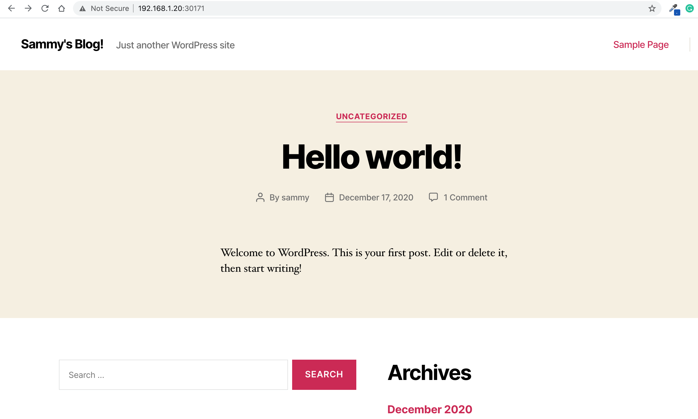

In this exercice, you will learn how to install and configure a mysql database and a wordpress website using kubernetes helm.
In simple terms, Helm is a package manager for Kubernetes. Helm is the K8s equivalent of yum or apt. Helm deploys charts, which you can think of as a packaged application.
It is a collection of all your versioned, pre-configured application resources which can be deployed as one unit.
#Outcomes
You should be able to:
- Install Helm
- Use of a Chart
- Deploy a MySQL database
- Deploy a WordPress server
<b>Estimated time: 30 mins </b>
#Steps
Helm allows for easy deployment of complex configurations. This could be handy for a vendor to deploy a multi-part application in a single step.
Through the use of a Chart, or template file, the required components and their relation-ships are declared.
To fully grasp helm, there are 3 concepts we need to get familiar with:
- Chart: A package of pre-configured Kubernetes resources.
- Release: A specific instance of a chart which has been deployed to the cluster using Helm.
- Repository: A group of published charts which can be made available to others.
1. Install Helm
Run this command to download Helm
```
wget https://get.helm.sh/helm-v3.0.0-linux-amd64.tar.gz
```
Output should be
```
helm-v3.0.0-linux-a 100%[===================>] 11.52M --.-KB/s in 0.1s
2019-11-25 06:28:39 (112 MB/s) - ‘helm-v3.0.0-linux-amd64.tar.gz’ saved [12082866/12082866]
```
Uncompress and expand the file.
```
tar -xvf helm-v3.0.0-linux-amd64.tar.gz
```
Copy the helm binary to the /usr/local/bin/ directory, so it is usable via the shell search path.
```
sudo cp linux-amd64/helm /usr/local/bin/helm
```
2. Preparing Helm
Once you have Helm ready, you can add a chart repository. One popular starting location is the official Helm stable charts:
```
helm repo add stable https://charts.helm.sh/stable
```
Make sure we get the latest list of charts
```
helm repo update
```
Check that it's successfully added
```
helm repo list
```
Output should be
```
NAME URL
stable https://charts.helm.sh/stable
```
3. Search for Charts
A Chart is a collection of files to deploy an application. There is a good starting repo available on
https://github.com/kubernetes/charts/tree/master/stable, provided by vendors, or you can make your own. Search the current Charts in
the Helm Hub or an instance of Monocular for available stable databases. Repos change often, so the following output
may be different from what you see.
```
helm search hub mysql
```
```
URL CHART VERSION APP VERSION DESCRIPTION
https://hub.helm.sh/charts/bitnami/mysql 8.2.3 8.0.22 Chart to create a HA MySQL cluster
https://hub.helm.sh/charts/t3n/mysql 0.1.0 8.0.22 Fast, reliable, scalable, and easy
.
.
https://hub.helm.sh/charts/choerodon/mysql 0.1.4 0.1.4 mysql for Choerodon https
```
4. Install MySQL database
In this section you will learn how to install and setup mysql in kubernetes cluster using helm.
As you can notice, there are a list of parameters passed to "helm install" command. These parameters allow us to customize our solution before even installing it.
For example, we've chosen a root password for MySQL using the variable "mysqlRootPassword". To keep things simple, we've chosen to disable persistence storage for the database.
```
helm install mysql-database --set mysqlRootPassword=toor,persistence.enabled=false stable/mysql
```
Output should be something like this
```
WARNING: This chart is deprecated
NAME: mysql-database
LAST DEPLOYED: Fri Dec 18 02:23:09 2020
NAMESPACE: default
STATUS: deployed
REVISION: 1
NOTES:
MySQL can be accessed via port 3306 on the following DNS name from within your cluster:
mysql-database.default.svc.cluster.local
To get your root password run:
MYSQL_ROOT_PASSWORD=$(kubectl get secret --namespace default mysql-database -o jsonpath="{.data.mysql-root-password}" | base64 --decode; echo)
To connect to your database:
1. Run an Ubuntu pod that you can use as a client:
kubectl run -i --tty ubuntu --image=ubuntu:16.04 --restart=Never -- bash -il
2. Install the mysql client:
$ apt-get update && apt-get install mysql-client -y
3. Connect using the mysql cli, then provide your password:
$ mysql -h mysql-database -p
To connect to your database directly from outside the K8s cluster:
MYSQL_HOST=127.0.0.1
MYSQL_PORT=3306
# Execute the following command to route the connection:
kubectl port-forward svc/mysql-database 3306
mysql -h ${MYSQL_HOST} -P${MYSQL_PORT} -u root -p${MYSQL_ROOT_PASSWORD}
```
You can check the entire list of available variables on the chart's link on github:
```
https://github.com/helm/charts/tree/master/stable/wordpress
```
Now, let's check what k8s objects have been created.
```
kubectl get all
```
Output
```
NAME READY STATUS RESTARTS AGE
pod/mysql-database-5bb86bb876-8h955 1/1 Running 0 3h15m
NAME TYPE CLUSTER-IP EXTERNAL-IP PORT(S) AGE
service/kubernetes ClusterIP 10.96.0.1 <none> 443/TCP 12d
service/mysql-database ClusterIP 10.97.61.196 <none> 3306/TCP 3h15m
NAME READY UP-TO-DATE AVAILABLE AGE
deployment.apps/mysql-helm 1/1 1 1 3h15m
NAME DESIRED CURRENT READY AGE
replicaset.apps/mysql-helm-5bb86bb876 1 1 1 3h15m
```
Then, let's get the exact ip address of the pod running the mysql database
```
kubectl get pods -o wide
```
Output
```
NAME READY STATUS RESTARTS AGE IP NODE
mysql-database-5bb86bb876-8h955 1/1 Running 0 158m 10.32.0.10 worker-node1
```
Save this IP address of the mysql-database pod, we will need it later on.
There are also other kubernetes objects created such as configmap and secrets:
```
kubectl get configmaps
```
Output
```
NAME DATA AGE
mysql-database-test 1 41m
```
```
kubectl describe configmaps mysql-database-test
```
```
Name: mysql-database-test
Namespace: default
Labels: app=mysql-database
app.kubernetes.io/managed-by=Helm
chart=mysql-1.6.9
heritage=Helm
release=mysql-database
Annotations: meta.helm.sh/release-name: mysql-database
meta.helm.sh/release-namespace: default
Data
====
run.sh:
----
@test "Testing MySQL Connection" {
mysql --host=mysql-database --port=3306 -u root -ptoor
}
Events: <none>
```
As you can see in the description, it says managed by helm.
Now, let's check secrets
```
kubectl get secrets
```
```
NAME TYPE DATA AGE
default-token-82xpl kubernetes.io/service-account-token 3 74d
mysql-database Opaque 2 45m
sh.helm.release.v1.mysql-database.v1 helm.sh/release.v1 1 45m
```
```
kubectl describe mysql-database
```
```
Name: mysql-database
Namespace: default
Labels: app=mysql-database
app.kubernetes.io/managed-by=Helm
chart=mysql-1.6.9
heritage=Helm
release=mysql-database
Annotations: meta.helm.sh/release-name: mysql-database
meta.helm.sh/release-namespace: default
Type: Opaque
Data
====
mysql-password: 10 bytes
mysql-root-password: 4 bytes
```
As you can see in the description, it says managed by helm.
5. Connect to the database via a mysql client
Now, we will use a mysql client in order to connect to our previously created database.
Let's create a mysql client using this command, remember to change the ip address to the one you found previously.
```
kubectl run -it --image=mysql mysql-client -- mysql -h<10.32.0.10> -P3306 -ptoor
```
Output
```
If you don't see a command prompt, try pressing enter.
```
In order to check the list of avaialable databases, start typing this command:
```
show databases;
```
Output
```
mysql> show databases ;
+--------------------+
| Database |
+--------------------+
| information_schema |
| mysql |
| performance_schema |
| sys |
+--------------------+
4 rows in set (0.00 sec)
```
To create the database, you can use the following statement:
```
CREATE DATABASE wordpress;
```
Output
```
Query OK, 1 row affected (0.00 sec)
```
Now, let’s create a dedicated MySQL user for this database, feel free to choose a different password:
```
CREATE USER wordpress_user IDENTIFIED BY 'password';
```
```
Query OK, 0 rows affected (0.00 sec)
```
The user wordpress_user was created, but it doesn’t have any access permissions yet.
The following command will give this user admin access (all privileges) to the wordpress database from both local and external networks:
```
GRANT ALL PRIVILEGES ON wordpress.* TO wordpress_user@'%';
```
```
Query OK, 0 rows affected (0.02 sec)
```
Now you can exit the MySQL client with:
```
exit;
```
<!-- Because our WordPress installation will live on a separate server, we still need to edit our MySQL configuration to allow connections coming from external hosts.
First, connect to a bash in your pod.
```
kubectl exec -it mysql-client -- bash
```
```
echo "bind-address = 0.0.0.0" >> /etc/mysql/mysql.conf.d/mysqld.cnf
``` -->
5. Preparing WordPress
Now that we have the necessary information to connect to the MySQL database, we can go ahead and install WordPress using Helm.
By default, the WordPress chart installs MariaDB on a separate pod inside the cluster and uses it as the WordPress database. We want to disable this behavior and configure WordPress to use an external MySQL database.
This and other configuration options (such as the default WordPress admin user and password) can be set at installation time, either via command-line parameters or via a separate YAML configuration file.
In order to keep things organized and easily extendable, we are going to use a configuration file.
From your local machine, create a new directory for your project settings and navigate into it:
```
mkdir myblog-settings; cd myblog-settings
```
Then, create an file with the config below.
```
vi values.yaml
```
Feel free to change your information, also do not forget to change the wordpressPassword to the one you used previously and the mysql_server_ip too.
```
## Blog/Site Info
wordpressUsername: sammy
wordpressPassword: password
wordpressEmail: sammy@example.com
wordpressFirstName: Sammy
wordpressLastName: the Shark
wordpressBlogName: Sammy's Blog!
## Database Settings
externalDatabase:
host: mysql_server_ip
user: wordpress_user
password: password
database: wordpress
## Disabling MariaDB
mariadb:
enabled: false
```
Don't forget to change mysql_server_ip with the ip found in the previous steps.
6. Launch WordPress
Now that we have all settings in place, it is time to execute helm to install WordPress.
The following command tells helm to install the most recent stable release of the WordPress chart under the name myblog, using values.yaml as configuration file:
```
helm install wpblog --set persistence.enabled=false -f values.yaml stable/wordpress
```
Output should be
```
WARNING: This chart is deprecated
NAME: wpblog
LAST DEPLOYED: Fri Dec 18 03:11:28 2020
NAMESPACE: default
STATUS: deployed
REVISION: 1
TEST SUITE: None
NOTES:
This Helm chart is deprecated
Given the `stable` deprecation timeline (https://github.com/helm/charts#deprecation-timeline), the Bitnami maintained Helm chart is now located at bitnami/charts (https://github.com/bitnami/charts/).
The Bitnami repository is already included in the Hubs and we will continue providing the same cadence of updates, support, etc that we've been keeping here these years. Installation instructions are very similar, just adding the _bitnami_ repo and using it during the installation (`bitnami/<chart>` instead of `stable/<chart>`)
bash
$ helm repo add bitnami https://charts.bitnami.com/bitnami
$ helm install my-release bitnami/<chart> # Helm 3
$ helm install --name my-release bitnami/<chart> # Helm 2
To update an exisiting _stable_ deployment with a chart hosted in the bitnami repository you can execute
$ helm repo add bitnami https://charts.bitnami.com/bitnami
$ helm upgrade my-release bitnami/<chart>
Issues and PRs related to the chart itself will be redirected to `bitnami/charts` GitHub repository. In the same way, we'll be happy to answer questions related to this migration process in this issue (https://github.com/helm/charts/issues/20969) created as a common place for discussion.
** Please be patient while the chart is being deployed **
To access your WordPress site from outside the cluster follow the steps below:
1. Get the WordPress URL by running these commands:
NOTE: It may take a few minutes for the LoadBalancer IP to be available.
Watch the status with: 'kubectl get svc --namespace default -w wpblog-wordpress'
export SERVICE_IP=$(kubectl get svc --namespace default wpblog-wordpress --template "{{ range (index .status.loadBalancer.ingress 0) }}{{.}}{{ end }}")
echo "WordPress URL: http://$SERVICE_IP/"
echo "WordPress Admin URL: http://$SERVICE_IP/admin"
2. Open a browser and access WordPress using the obtained URL.
3. Login with the following credentials below to see your blog:
echo Username: sammy
echo Password: $(kubectl get secret --namespace default wpblog-wordpress -o jsonpath="{.data.wordpress-password}" | base64 --decode)
```
Now, let's check what k8s objects have been created.
```
kubectl get all
```
Output
```
NAME READY STATUS RESTARTS AGE
pod/mysql-client 1/1 Running 1 43m
pod/mysql-database-68f44c5fc5-khzcm 1/1 Running 0 49m
pod/wpblog-wordpress-5b94cb88-q7vrl 1/1 Running 0 96s
NAME TYPE CLUSTER-IP EXTERNAL-IP PORT(S) AGE
service/mysql-database ClusterIP 10.100.66.73 <none> 3306/TCP 49m
service/wpblog-wordpress LoadBalancer 10.96.91.138 <pending> 80:32577/TCP,443:30704/TCP 97s
NAME READY UP-TO-DATE AVAILABLE AGE
deployment.apps/mysql-database 1/1 1 1 49m
deployment.apps/wpblog-wordpress 0/1 1 0 97s
NAME DESIRED CURRENT READY AGE
replicaset.apps/mysql-database-68f44c5fc5 1 1 1 49m
replicaset.apps/wpblog-wordpress-5b94cb88 1 1 0 97s
```
Then, let's get the open Node port on our host machine.
```
kubectl get services
```
Output
```
NAME TYPE CLUSTER-IP EXTERNAL-IP PORT(S) AGE
kubernetes ClusterIP 10.96.0.1 <none> 443/TCP 12d
wpblog-wordpress LoadBalancer 10.110.14.44 <pending> 80:30171/TCP,443:32382/TCP 27s
mysql ClusterIP 10.97.61.196 <none> 3306/TCP 63m
```
Access your wordpress page at
```
http://worker_node_ip:30171
```
You should get a page like this

Congratulations! You've setup a WordPress/MySQL server using Helm.